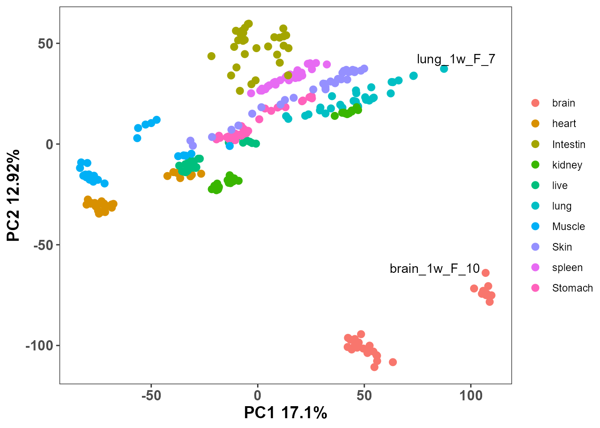
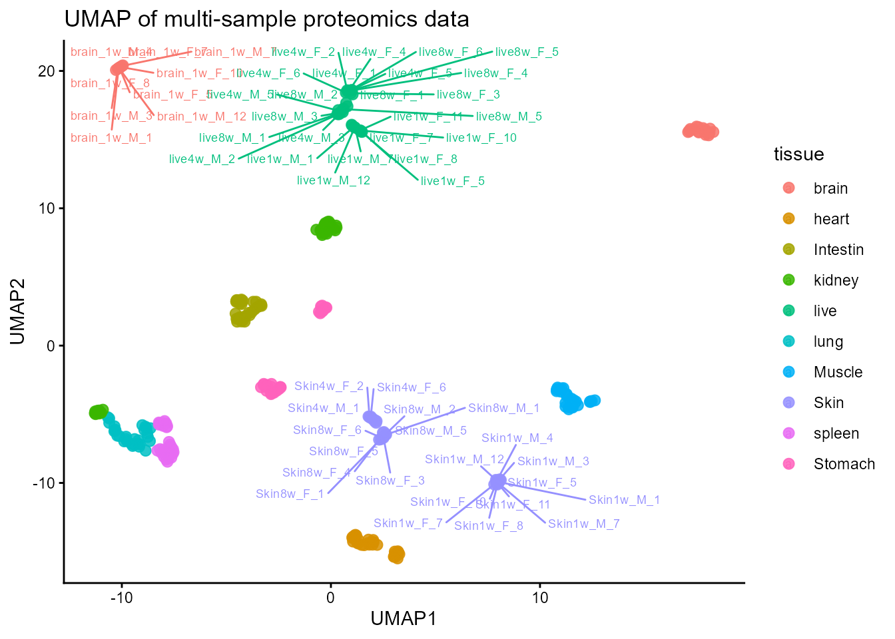
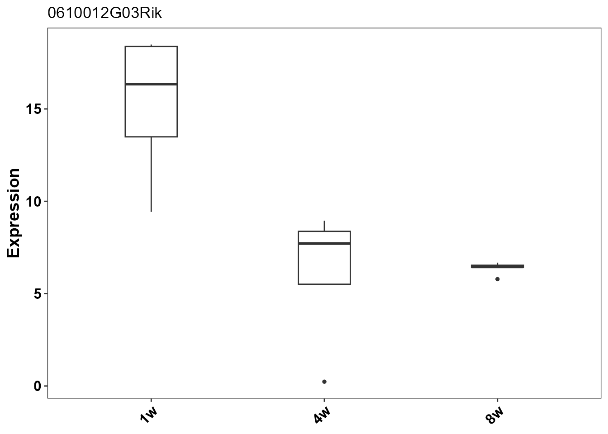

Multiple Sample Analysis with EasyProtein
Source:vignettes/multiple_sample_analysis.Rmd
multiple_sample_analysis.Rmd
suppressPackageStartupMessages({
library(EasyProtein)
library(tidyverse)
library(SummarizedExperiment)
})
#> Warning: package 'ggplot2' was built under R version 4.4.3Multiple Sample Analysis with EasyProtein
1. Tutorial metadata
-
Tutorial name: Multiple Sample Analysis with
EasyProtein
-
Tutorial type: Guided workflow for multi-sample
proteomics data
-
Target audience: Users working with several
conditions and biological replicates
-
Primary goal: Show how to inspect, organize, and
understand a multi-sample protein expression dataset before downstream
differential analysis
-
Expected outcome: You will learn how to:
- load a proteomics matrix into a standard EasyProtein object
- define sample metadata for multiple conditions and replicates
- perform basic quality control across all samples
- inspect sample relationships and overall structure with PCA
2. Load example data and build
SummarizedExperiment
In a multi-sample workflow, the first task is to bring all samples into a single analysis object so they can be compared consistently.
This tutorial uses the example file
inst/extdata/mouse_multi-organ_DIA_report.pg_matrix.tsv.gz.
exp_file <- system.file(
"extdata",
"mouse_multi-organ_DIA_report.pg_matrix.tsv.gz",
package = "EasyProtein"
)
stopifnot(file.exists(exp_file))
se_obj <- rawdata2se(exp_file)
#> [rawdata2se] Reading input took 1.23 seconds
#> [rawdata2se] Detecting raw columns took 0.00 seconds
#> [rawdata2se] Preprocessing took 2.92 seconds
#> [rawdata2se] Missing-value filtering took 128.41 seconds
#> [rawdata2se] Stability filtering took 3.34 seconds
#> [rawdata2se] Imputation took 11.80 seconds
#> [rawdata2se] Building SummarizedExperiment took 2.14 seconds
#> [rawdata2se] Done took 0.00 seconds
se <- se_obj$se
se
#> class: SummarizedExperiment
#> dim: 11556 299
#> metadata(0):
#> assays(4): raw_intensity intensity conc zscale
#> rownames(11556): 0610012G03Rik 1700010I14Rik ... unknown8 unknown9
#> rowData names(1): gene
#> colnames(299): brain_1w_F_5 brain_1w_F_7 ... Muscle8w_M_4 Muscle8w_M_5
#> colData names(4): sample condition rep groupThe object created by rawdata2se() already contains the
main expression matrix and basic sample annotations. For multi-sample
analysis, this is the point where you should check whether the
experimental design has been read in correctly.
3. Add sample metadata
Multi-sample proteomics data usually need a few explicit grouping variables before any interpretation is possible. Typical examples are tissue, treatment, time point, sex, batch, or replicate number.
Here we derive tissue, age, and
sex from the existing condition field so the
sample structure becomes easier to read.
se$tissue <- str_extract(se$condition, '[A-Za-z]+')
se$age <- str_extract(se$condition, '\\dw')
se$sex <- str_extract(se$condition, '\\w$')
sample_table <- as.data.frame(SummarizedExperiment::colData(se)) %>%
dplyr::select(sample, condition, rep, tissue, age, sex)
head(sample_table, 10)
#> sample condition rep tissue age sex
#> brain_1w_F_5 brain_1w_F_5 brain_1w_F 5 brain 1w F
#> brain_1w_F_7 brain_1w_F_7 brain_1w_F 7 brain 1w F
#> brain_1w_F_8 brain_1w_F_8 brain_1w_F 8 brain 1w F
#> brain_1w_F_10 brain_1w_F_10 brain_1w_F 10 brain 1w F
#> brain_1w_M_1 brain_1w_M_1 brain_1w_M 1 brain 1w M
#> brain_1w_M_3 brain_1w_M_3 brain_1w_M 3 brain 1w M
#> brain_1w_M_4 brain_1w_M_4 brain_1w_M 4 brain 1w M
#> brain_1w_M_7 brain_1w_M_7 brain_1w_M 7 brain 1w M
#> brain_1w_M_12 brain_1w_M_12 brain_1w_M 12 brain 1w M
#> brain_4w_F_1 brain_4w_F_1 brain_4w_F 1 brain 4w FThis table is the minimum metadata map you need for a multi-sample study. In a real project, you may also add batch, instrument run, donor, or any other design variable that could influence the signal.
4. Quick QC and sample relationships
Before comparing conditions, it is important to check whether all samples behave in a broadly consistent way. We first inspect a few basic quality metrics, then use PCA to look at the overall sample structure.
4.1 Basic QC across samples
We inspect three common QC aspects:
- sample intensity distribution
- missing values per sample
- detected protein number per sample
se_sub <- se
p_density <- plotSE_density(se_sub)
p_missing <- plotSE_missing_value(se_sub)
p_detected <- plotSE_protein_number(se_sub)If the distributions are broadly aligned and no single sample stands out, the dataset is usually ready for deeper analysis. Large shifts, extreme missingness, or a very low detected-protein count are warning signs that should be checked before moving on.
4.2 Sample relationships with PCA
PCA is a simple way to see whether samples cluster by the variables you expect. In a multi-sample study, this helps answer questions such as:
- Do biological replicates cluster together?
- Are conditions separated in a meaningful way?
- Are there obvious outliers or mislabeled samples?
conc_mtx <- SummarizedExperiment::assay(se_sub, "conc")
pca.res <- FactoMineR::PCA(t(conc_mtx), graph = FALSE)
pca.df <- as.data.frame(pca.res$ind$coord)
pca.df$sample <- rownames(pca.df)
meta_df <- as.data.frame(SummarizedExperiment::colData(se_sub))
pca.df <- dplyr::left_join(pca.df, meta_df, by = "sample")
plot_pca(
pca.df = pca.df,
pca.res = pca.res,
colorby = "tissue",
label = "sample"
)
#> Warning: `aes_string()` was deprecated in ggplot2 3.0.0.
#> ℹ Please use tidy evaluation idioms with `aes()`.
#> ℹ See also `vignette("ggplot2-in-packages")` for more information.
#> ℹ The deprecated feature was likely used in the EasyProtein package.
#> Please report the issue at
#> <https://github.com/yuanlizhanshi/EasyProtein/issues>.
#> This warning is displayed once every 8 hours.
#> Call `lifecycle::last_lifecycle_warnings()` to see where this warning was
#> generated.
#> Warning: ggrepel: 298 unlabeled data points (too many overlaps). Consider
#> increasing max.overlaps
In this view, a clean multi-sample dataset should show reproducible replicate behavior and a reasonable separation between tissues, treatments, or time points. If the PCA shows one sample far away from its group, that sample should be examined carefully before any downstream comparison.
4.3 UMAP for a nonlinear view of sample similarity
PCA is useful for a linear summary of the sample space, but it does not always capture local neighborhoods very well. UMAP can provide a complementary view when you want to see whether nearby samples stay close under a nonlinear embedding.
if (requireNamespace("uwot", quietly = TRUE)) {
set.seed(123)
umap_mat <- t(conc_mtx)
umap_xy <- uwot::umap(
umap_mat,
n_neighbors = 15,
min_dist = 0.25,
metric = "cosine"
)
umap.df <- as.data.frame(umap_xy)
colnames(umap.df) <- c("UMAP1", "UMAP2")
umap.df$sample <- rownames(umap.df)
umap.df <- dplyr::left_join(umap.df, meta_df, by = "sample")
ggplot2::ggplot(umap.df, ggplot2::aes(UMAP1, UMAP2, color = tissue, label = sample)) +
ggplot2::geom_point(size = 2.5, alpha = 0.85) +
ggrepel::geom_text_repel(size = 2.5, max.overlaps = 30) +
ggplot2::theme_classic() +
ggplot2::labs(title = "UMAP of multi-sample proteomics data")
} else {
message("Package 'uwot' is not installed, so the UMAP plot is skipped.")
}
#> Warning: ggrepel: 244 unlabeled data points (too many overlaps). Consider
#> increasing max.overlaps
UMAP is not a replacement for PCA. The two views answer slightly different questions, and using both is usually the safest way to inspect a multi-sample dataset.
5. Group-level summary and expression overview
Once the full dataset has passed the global QC checks, it is usually easier to focus on one biologically coherent subset for more detailed summaries. Here we use male heart samples as a compact example for group-level inspection.
se_focus <- se[, se$tissue == "heart" & se$sex == "M"]
se_focus$age <- factor(se_focus$age, levels = c("1w", "4w", "8w"))
sample_focus <- as.data.frame(SummarizedExperiment::colData(se_focus)) %>%
dplyr::select(sample, condition, rep, tissue, age, sex)
head(sample_focus, 10)
#> sample condition rep tissue age sex
#> heart_1w_M_1 heart_1w_M_1 heart_1w_M 1 heart 1w M
#> heart_1w_M_3 heart_1w_M_3 heart_1w_M 3 heart 1w M
#> heart_1w_M_4 heart_1w_M_4 heart_1w_M 4 heart 1w M
#> heart_1w_M_9 heart_1w_M_9 heart_1w_M 9 heart 1w M
#> heart_1w_M_12 heart_1w_M_12 heart_1w_M 12 heart 1w M
#> heart_4w_M_1 heart_4w_M_1 heart_4w_M 1 heart 4w M
#> heart_4w_M_2 heart_4w_M_2 heart_4w_M 2 heart 4w M
#> heart_4w_M_3 heart_4w_M_3 heart_4w_M 3 heart 4w M
#> heart_4w_M_5 heart_4w_M_5 heart_4w_M 5 heart 4w M
#> heart_4w_M_6 heart_4w_M_6 heart_4w_M 6 heart 4w MThe first useful summary is the group-aggregated concentration table. This reduces replicate-level noise and makes it easier to see the overall expression pattern across conditions.
conc_overview <- se2conc(se_focus, group_by = "age")
head(conc_overview[, c("gene", "Mean_1w", "Mean_4w", "Mean_8w")])
#> gene Mean_1w Mean_4w Mean_8w
#> 0610012G03Rik 0610012G03Rik 15.4157394 7.9023121 1.4531309
#> 1700010I14Rik 1700010I14Rik 1.4205627 1.5103857 1.2756508
#> 1810009J06Rik 1810009J06Rik 128.3608581 198.0634763 234.2058277
#> 1810024B03Rik 1810024B03Rik 0.2554929 0.2323941 0.2004997
#> 1810065E05Rik 1810065E05Rik 0.2554929 0.2323941 0.2004997
#> 2010106E10Rik 2010106E10Rik 2.4292260 0.2323941 0.2004997For a more compact view, you can also calculate the mean and CV per group directly. The mean tells you the average abundance, while CV gives a quick sense of within-group stability.
conc_mean_mtx <- calc_gene_mean_by_condition(
se = se_focus,
assay_name = "conc",
condition_col = "age"
)
conc_cv_df <- calc_gene_CV_by_condition(
se = se_focus,
assay_name = "conc",
condition_col = "age"
)
dim(conc_mean_mtx)
#> [1] 11556 3
head(conc_cv_df)
#> feature age mean_val sd_val CV n
#> 1 0610012G03Rik 1w 15.4157394 3.88874091 0.25225783 5
#> 2 1700010I14Rik 1w 1.4205627 0.18633648 0.13117090 5
#> 3 1810009J06Rik 1w 128.3608581 183.23032456 1.42746260 5
#> 4 1810024B03Rik 1w 0.2554929 0.01148398 0.04494835 5
#> 5 1810065E05Rik 1w 0.2554929 0.01148398 0.04494835 5
#> 6 2010106E10Rik 1w 2.4292260 5.08799076 2.09449052 5When you want to inspect the expression profile of a specific protein across groups, a trend plot is often easier to read than a table. The example below shows the group-level pattern for one feature.
example_gene <- rownames(conc_mean_mtx)[1]
plot_gene_expression(se_focus, gene = example_gene, by = "age")
If you are summarizing many features at once, a heatmap or a trend plot can be used to highlight the main group-level expression patterns. The key idea is to move from replicate-level values to a condition-level overview before starting differential testing.
6. Multi-group comparison and batch differential analysis
With the samples organized into a clear subset, the next step is to compare all age groups in a batch manner. This is more efficient than writing a separate comparison for each pair.
deg_list <- get_batch_DEGs(
se = se_focus,
compare_col = "age",
start_col = 1
)
names(deg_list)
#> [1] "4w" "8w"
deg_counts <- tibble::tibble(
comparison = names(deg_list),
n_total = purrr::map_int(deg_list, nrow),
n_sig = purrr::map_int(deg_list, ~ sum(.x$adj.P.Val <= 0.05, na.rm = TRUE))
)
deg_counts
#> # A tibble: 2 × 3
#> comparison n_total n_sig
#> <chr> <int> <int>
#> 1 4w 11556 8770
#> 2 8w 11556 9095The list returned by get_batch_DEGs() contains one DEG
table for each comparison against the reference group. This format is
convenient because you can inspect one comparison at a time, or combine
them later for a broader summary.
first_deg <- deg_list[[1]]
head(
first_deg %>%
dplyr::select(gene, logFC, P.Value, adj.P.Val, DEGs_types, starts_with("median_")),
10
)
#> gene logFC P.Value adj.P.Val DEGs_types median_1w
#> 1 0610012G03Rik -0.93855436 1.419631e-03 3.536727e-03 NS 16.5796535
#> 2 1700010I14Rik 0.08268248 6.254021e-01 6.702353e-01 NS 1.4214735
#> 3 1810009J06Rik 1.50682138 7.548573e-02 9.632433e-02 NS 38.7228996
#> 4 1810024B03Rik -0.12335733 6.404744e-03 9.248185e-03 NS 0.2542564
#> 5 1810065E05Rik -0.12335733 6.404744e-03 9.248185e-03 NS 0.2542564
#> 6 2010106E10Rik -0.62202254 6.045739e-01 6.514178e-01 NS 0.1808223
#> 7 2200002D01Rik -0.12335733 6.404744e-03 9.248185e-03 NS 0.2542564
#> 8 2210010C04Rik -0.71945320 2.601416e-01 3.104018e-01 NS 227.6273719
#> 9 2210016F16Rik -0.19289113 1.860646e-02 2.536168e-02 NS 46.6280649
#> 10 2310061I04Rik 1.01688936 8.234601e-07 5.422168e-06 UP 9.0778218
#> median_4w
#> 1 8.3012851
#> 2 1.5491911
#> 3 186.2297729
#> 4 0.2289472
#> 5 0.2289472
#> 6 0.2289472
#> 7 0.2289472
#> 8 98.5826739
#> 9 41.5737875
#> 10 17.3553123If your study has more than one biological factor, the same approach still works, but you should choose a biologically coherent subset first. In practice, that usually means keeping one tissue, one sex, or one treatment context fixed before running a batch of pairwise comparisons.
7. Result filtering and tissue-specific pattern clustering
After running pairwise comparisons, you will typically filter results to a manageable set. For a broad multi-tissue dataset, another useful next step is to ask whether proteins form tissue-specific expression programs. This follows the clustering strategy used in case study 1: summarize protein abundance by tissue, row-scale the tissue-level matrix, cluster proteins by their tissue-level profiles, then assign each cluster to the tissue where its average z-score is highest.
# Combine DEG lists into a single table with comparison labels
deg_combined <- purrr::imap_dfr(deg_list, ~ dplyr::mutate(.x, comparison = .y))
# Example filter: significant and at least moderate effect size
deg_sig <- deg_combined %>%
dplyr::filter(adj.P.Val <= 0.05, abs(logFC) >= 1)
nrow(deg_sig)
#> [1] 7436
# Case study 1 clustering: tissue mean expression followed by row-wise z-score.
tissue_mean <- calc_gene_mean_by_condition(
se = se,
assay_name = "conc",
method = "mean",
condition_col = "tissue"
)
tissue_levels <- colnames(tissue_mean)
tissue_mean_z <- scale_mtx(tissue_mean)
tissue_mean_z[!is.finite(tissue_mean_z)] <- 0
# Cluster proteins with non-flat tissue-level profiles.
row_var <- matrixStats::rowVars(tissue_mean_z)
cluster_input <- tissue_mean_z[row_var > 0, , drop = FALSE]
hc <- stats::hclust(stats::dist(cluster_input), method = "ward.D2")
k <- min(24, max(8, length(tissue_levels) * 2))
cluster_id <- stats::cutree(hc, k = k)
cluster_df <- tibble::tibble(
gene = names(cluster_id),
cluster = paste0("C", cluster_id)
)
cluster_summary <- lapply(split(cluster_df$gene, cluster_df$cluster), function(genes) {
means <- colMeans(tissue_mean_z[genes, , drop = FALSE], na.rm = TRUE)
ord <- order(means, decreasing = TRUE)
data.frame(
cluster = unique(cluster_df$cluster[match(genes[1], cluster_df$gene)]),
assigned_tissue = names(means)[ord[1]],
top_mean_z = means[ord[1]],
second_mean_z = means[ord[2]],
specificity_score = means[ord[1]] - means[ord[2]],
cluster_size = length(genes),
stringsAsFactors = FALSE
)
}) %>%
dplyr::bind_rows()
specific_clusters <- cluster_summary %>%
dplyr::filter(specificity_score >= 0.5, top_mean_z > 0) %>%
dplyr::arrange(factor(assigned_tissue, levels = tissue_levels), dplyr::desc(specificity_score))
tissue_specific <- cluster_df %>%
dplyr::inner_join(specific_clusters, by = "cluster") %>%
dplyr::mutate(
gene_symbol = gene,
assigned_tissue_mean_expression = tissue_mean[cbind(gene, assigned_tissue)],
assigned_tissue_mean_z = tissue_mean_z[cbind(gene, assigned_tissue)]
) %>%
dplyr::arrange(factor(assigned_tissue, levels = tissue_levels), cluster, dplyr::desc(assigned_tissue_mean_z))
if (nrow(tissue_specific) == 0) {
stop("No tissue-specific clusters passed the specificity rule.")
}
head(cluster_summary)
#> cluster assigned_tissue top_mean_z second_mean_z specificity_score
#> Intestin...1 C1 Intestin 2.379040 0.10682744 2.272212
#> lung...2 C10 lung 2.406996 -0.03089730 2.437893
#> Stomach C11 Stomach 2.366942 0.07904919 2.287893
#> kidney...4 C12 kidney 2.123756 0.02060716 2.103148
#> brain...5 C13 brain 1.861358 0.45269409 1.408664
#> kidney...6 C14 kidney 1.316972 1.17044176 0.146530
#> cluster_size
#> Intestin...1 1323
#> lung...2 736
#> Stomach 295
#> kidney...4 669
#> brain...5 1385
#> kidney...6 256
head(tissue_specific)
#> # A tibble: 6 × 10
#> gene cluster assigned_tissue top_mean_z second_mean_z specificity_score
#> <chr> <chr> <chr> <dbl> <dbl> <dbl>
#> 1 Tmem132a C13 brain 1.86 0.453 1.41
#> 2 Exog C13 brain 1.86 0.453 1.41
#> 3 Sbf1 C13 brain 1.86 0.453 1.41
#> 4 Ccn3 C13 brain 1.86 0.453 1.41
#> 5 Map2k1 C13 brain 1.86 0.453 1.41
#> 6 Oscp1 C13 brain 1.86 0.453 1.41
#> # ℹ 4 more variables: cluster_size <int>, gene_symbol <chr>,
#> # assigned_tissue_mean_expression <dbl>, assigned_tissue_mean_z <dbl>The resulting tissue_specific table links each protein
to a tissue-enriched cluster. The specificity_score is the
difference between the highest and second-highest cluster mean z-score,
so higher values indicate a clearer tissue preference.
8. Heatmaps and trend visualization
Visual summaries are essential for communicating multi-group patterns. Below we show a heatmap of representative tissue-specific proteins using the case study 1 cluster labels.
# Select representative proteins from each assigned tissue.
display_genes <- tissue_specific %>%
dplyr::group_by(assigned_tissue) %>%
dplyr::slice_max(order_by = assigned_tissue_mean_z, n = 40, with_ties = FALSE) %>%
dplyr::ungroup() %>%
dplyr::pull(gene)
display_genes <- intersect(display_genes, rownames(se))
sample_z <- scale_mtx(SummarizedExperiment::assay(se, "conc")[display_genes, , drop = FALSE])
sample_z[!is.finite(sample_z)] <- 0
row_split <- tissue_specific$assigned_tissue[match(rownames(sample_z), tissue_specific$gene)]
row_split <- factor(row_split, levels = tissue_levels)
ht <- plot_heatmap_withline(
mat = sample_z,
column_split = se$tissue,
row_split = row_split
)
print(ht)Note: The heatmap code is disabled during vignette rendering to keep
the article compact. To run it locally, set the chunk option
eval=TRUE and ensure ComplexHeatmap is installed.
These visualizations let you inspect whether tissue-specific proteins form coherent clusters, whether clusters correspond to biological hypotheses, and whether clusters are driven by outliers or consistent group-level changes.
9. Functional enrichment and biological interpretation
To move from proteins to biology, perform pathway and GO enrichment
on sets of interest, such as proteins assigned to a tissue-specific
cluster. enrichment_analysis() is a light wrapper that can
use clusterProfiler if installed.
# Example: take genes from one tissue-specific program.
example_tissue <- specific_clusters$assigned_tissue[1]
cluster_genes <- tissue_specific %>%
dplyr::filter(assigned_tissue == example_tissue) %>%
dplyr::pull(gene)
if (length(cluster_genes) > 0) {
if (!requireNamespace("clusterProfiler", quietly = TRUE)) {
message("Install 'clusterProfiler' and organism DB to run enrichment.")
} else {
go_res <- enrichment_analysis(
gene = cluster_genes,
db = "GO",
species = "mouse",
keyType = "SYMBOL",
qvalue_cutoff = 0.05
)
head(go_res, 20)
}
}Functional enrichment helps summarize what a list of proteins might be doing biologically. Always interpret enrichments together with effect-size and expression patterns, not only p-values.
10. Exporting results and reproducible analysis
Save processed objects, DEG tables, and plots so your analysis can be reproduced.
# Save R objects
saveRDS(se_focus, file = "results/se_focus_heart_male.rds")
# Export DEG tables
purrr::iwalk(deg_list, ~ write.csv(.x, file = paste0("results/DEGs_", .y, ".csv"), row.names = FALSE))
# Save tissue-specific cluster gene lists
write.csv(tissue_specific, file = "results/tissue_specific_gene_clusters.csv", row.names = FALSE)
write.csv(cluster_summary, file = "results/tissue_specific_cluster_summary.csv", row.names = FALSE)